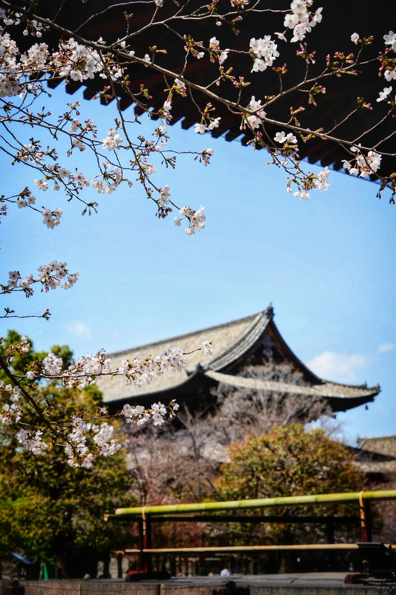
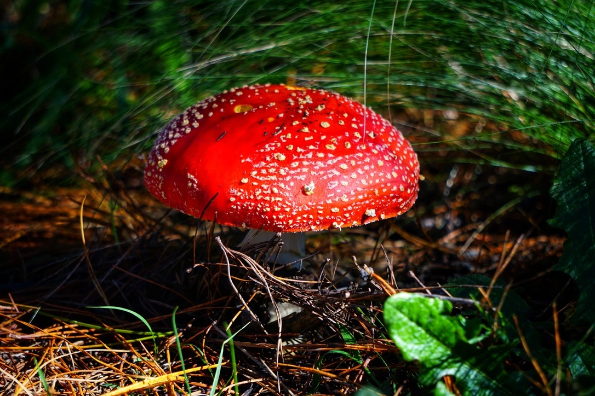
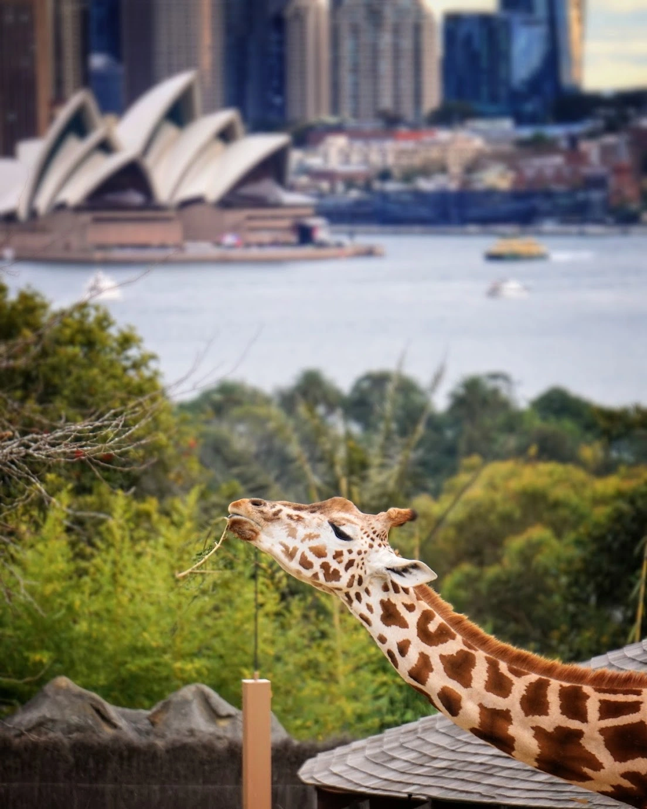
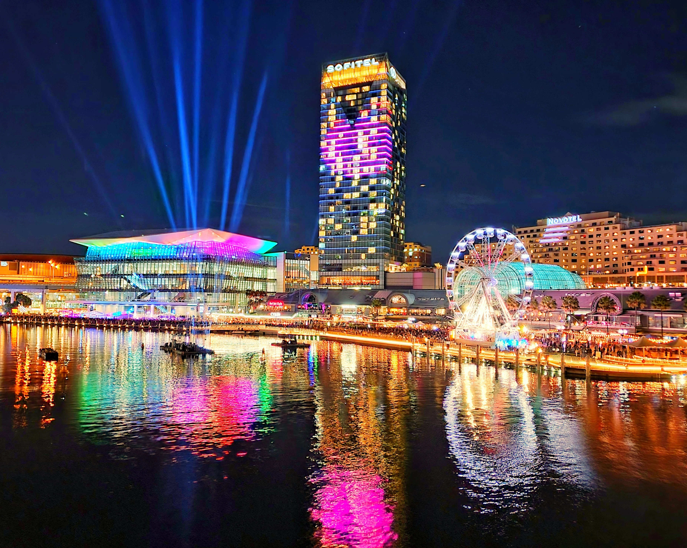

Toji Temple ⛩️
The places we wanted to go, the ones on our list were quite far. And we didn't have much time, unfortunately. So we decided to go to the closest place from Kyoto Station-- Toji Temple, which only took us around 15 mins to get there. Although it was Spring, I found the temperature was a bit hot that day, so we stayed in the shade where possible. Once we got there, we saw a lot of cherry blossom trees. Regarding the timing, we were a lil' bit early. If only we came 3 days later, we would possibly see the best of it. No regret, though.
📆: April 2024
Mushroom 🍄
While it is springtime in Australia, it is autumn in Northern Hemisphere. Although it has ended, autumn just feels like yesterday. Clearly emblazoned in my mind. Still remember the joy it brings. Still remember the excitement to see this fly argaric mushroom for the very first time before my eyes. So appealing, charming. Magical, like a fairy tale. Surreal, like the wildest dreams that I dare to dream, really do come true.
📆: May 2022
Giraffe 🦒
She approaches me and says, "could you please take some photos for me?" "With the Opera House as the background?", she adds.I say, of course! My name is Mrs. Giraffe by the way. She continues whilst handling her phone. You can call me G. I am gonna show the photos to my grandchildren. I haven't got a chance to say anything. She is very chatty and keeps on talking and talking until I politely ask her to stay still for the photos. Once the photo session is done, I hand back her phone and she thanks me and keeps talking. You don't want to hear it, hahaha.
📆: June 2022
Autumn Leaves 🍁

The thing is, you cannot predict what it will be like or when it will happen. The leaves can turn colour early, they can also change colour later on. A little too early or a little to late makes so much diffence. I was grateful, I got to see this just in perfect timing. It was a public holiday, Anzac Day. I didn't have to work, I didn't need to do anything, the weather was nice. Just perfect.
📆: April 2024
Byron Bay 🩴
It was November 2019, before Covid 19 hit Australia. Before I could even think that there's such thing. My friends and I decided to go on road trip after we finished our 88 days. It started from Cairns and ended in Brisbane. But we drove down to Byron Bay, before head back to Brisbane to fly to Sydney as it's not that far anyway. I mean, compared to our starting point. This photo was taken near the light house where you could see the marvelous ocean
📆: November 2019
Darling Harbour 🎡
Taken when I thought things went back to normal. It did feel like normal for a couple of months. Before one became dozens, dozens became hundreds, and I won’t be surprised if hundreds become thousands. Maybe tomorrow, the next day, the following day, next week, who knows?
The thought of flying to my home country next year seems less likely to happen. But, we never know, right? There's hope.
Hopefully, with the vast majority of people got vaccinated, Australia will open up its borders to other countries. We're in this together. Together we can.
📆: June 2021